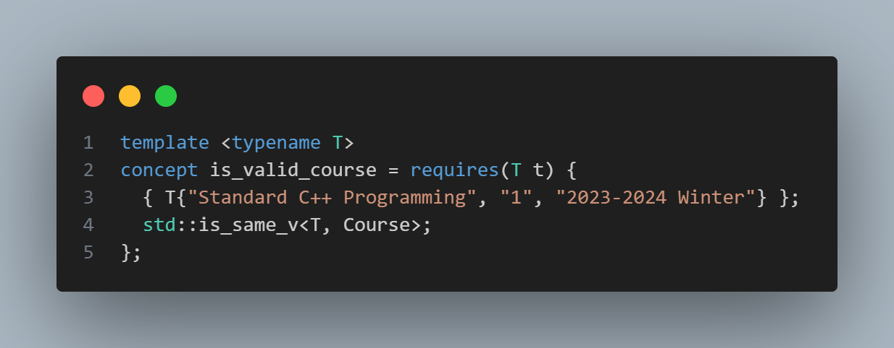

【CS106L SPRING 2025】 Assignment学习总结¶
课程介绍¶
课程主页：CS106L: Standard C++ Programming
课程内容：CS106L 是有关现代 C++ 的一门课，包含了 C++ 很多有趣的特性，涉及的内容一直到 C++26
学习感悟：我在学习这门课的时候，只做了 assignment，并没有阅读 slide 和 lecture code，所以在学习过程中有一点吃力。不过 assignment 的引导还是做的很好的，在不知道课程内容的情况下，仅靠查阅 cpp reference 和给出的参考资料就能够完成全部内容，并且了解到 cpp 的新特性。总体而言，这门课程讲解了比较现代的 C++ 特性。从开始的流输入输出，STL，到类的继承，再到模板元编程、运算符重载，到最后的 RAII。
个人仓库：GitHub - singularityu820/cs106l
Assignment 1: SimpleEnroll¶
任务一不是很难，只是让大家快速进入状态，核心目标很简单：处理一份课程 CSV 数据，最终拆分成 “已开设课程” 和 “未开设课程” 两个文件。
Part 0: Read the code and fill in the Course struct¶
这一部分需要定义 Course struct 中变量的类型，阅读代码，转到 is_valid_course<Course> 的定义，发现具体内容如下
 那么根据代码我们就可以知道，三个成员变量都应该是 std::string 。
Part 1: parse_csv¶
根据 README 的指引，首先我们需要了解 split 函数。阅读源码，我们可以知道， split 接受 std::string 和 char 作为输入，一个是待分割的字符串，一个是分隔的标记符，输出结果是一个 vector 。
那么我们就可以往下进行，首先将文件按行输入，然后每行做一个 split ，然后将分割出来的数组放入 courses 中。
文件输入就运用到了 C++ 中的 <fstream> 头文件
这样就处理完成了，注意 README 中提醒的跳过表头
Part 2: write_courses_offered¶
这个函数要求往文件中写入不是 null 的课程，并清理已写入的课程。
首先要特殊输出第一行
然后我在这里使用的是 for 循环，但是在后面学习过了以后，也可以使用 std::range:：for_each 。
阅读 utils.cpp 找到了 delete_elem_from_vector 辅助函数，同样的也可以直接使用后面的 erase_if 。
Part 3: write_courses_not_offered¶
和 Part 2 的逻辑是一样的。
Assignment 2: Marriage Pact¶
本次任务聚焦于 STL 容器（std::set/std::unordered_set、std::queue）和指针的使用，核心目标是从学生名单中筛选出与指定姓名拥有相同首字母的 “匹配对象”，流程包括读取数据、筛选匹配、选择结果三个主要步骤。
Part 0: Setup¶
输入自己的名字即可
Part 1: Get all applicants¶
从 students.txt 中读取所有学生姓名，存储到一个 std::set （有序集合）或 std::unordered_set （无序集合）中。我直接用的 std::set ，没有做修改。
Part 2: Find matches¶
从 get_applicants 得到的集合中，筛选出与参数 name ）首字母相同的姓名，将这些姓名的指针存入 std::queue 中。
主要是辅助函数的创建，也是类似 split 的方法，找到空格作为分隔符，分别查看两个部分的首字母。当然也可以使用 std::views 进行串联处理。
get_match 函数就是自由发挥了
Assignment 3: Make a Class¶
本次任务要求创建一个自定义 C++ 类，需满足构造函数重载、成员变量 / 函数访问控制、const 正确性等要求，并在 sandbox.cpp 中实例化该类。
Part 1: Making your class¶
这个任务没有什么具体要求，就是自己任意写一个类就行
Assignment 4: Ispell¶
这个是我感觉最繁琐的一项任务了，因为要求不能使用任何for或者while循环，全都使用STL实现，用到的都是比较新的特性。
本次任务需实现一个简易拼写检查器（Ispell）的核心逻辑，重点运用 STL 算法（<algorithm>）和 C++20 范围库（std::ranges::views），禁止使用 for/while 循环。核心目标是：
1. 将输入文本分割为结构化的 “token”（tokenize 函数）；
2. 根据字典检查 token 拼写正确性，并为错误拼写生成建议（spellcheck 函数）。
tokenize¶
根据 README 中给出的步骤，一步步进行即可。
首先找出所有指向空格字符的迭代器，直接使用 utils.cpp 中的 find_all 函数即可，传入迭代器和 isspace 就行了。
然后在空格字符之间生成词元，使用transform和inserter搭配。
最后用 std::erase_if 移除内容为空的 Token（如连续空白导致的空字符串）。
spellcheck¶
对比 Corpus （token 集合）和 Dictionary （正确词集合），找出拼写错误的 token，并为每个错误生成 “编辑距离为 1” 的建议词，最终返回 std::set<Misspelling> 。
首先，过滤正确拼写的 token，用 std::ranges::views::filter 筛选出不在字典中的 token（错误拼写）。
然后，生成建议词并转换为 Misspelling，用 rv::transform 将每个错误 token 转换为 Misspelling （含建议词）。
最后，再次用 rv::filter 移除建议词为空的 Misspelling，最终将结果转换为 std::set<Misspelling> 并返回。
Assignment 5: Treebook¶
本次任务聚焦于 C++ 类的运算符重载、友元函数及特殊成员函数（SMF）的实现，核心目标是完善 User 类的功能，解决内存管理问题，并支持基本的用户操作（如打印、添加好友等）。User 类使用原始指针数组存储好友列表，因此需重点处理内存拷贝与释放，避免浅拷贝导致的问题。
Part 1: Viewing Profiles¶
通过 std::ostream 输出 User 对象的信息，格式为 User(name=xxx, friends=[xxx, xxx])。
Part 2: Unfriendly Behaviour¶
User 类使用原始指针 _friends 存储好友，默认生成的特殊成员函数会导致浅拷贝（仅复制指针地址，而非数据），引发双重释放或悬垂指针问题。需手动实现 / 删除部分特殊成员函数。
需要实现析构函数，拷贝构造函数，拷贝赋值函数，删除移动构造与移动赋值
Part 3: Always Be Friending¶
实现 operator+=（添加好友）和 operator<（用户比较），均为成员函数。
Assignment 6: Explore Courses¶
本次任务聚焦于 std::optional 的使用，核心目标是实现一个课程查找功能，并利用 std::optional 的 “单子操作”（monadic operations）处理查找结果，避免使用条件判断（如 if）。任务基于与 Assignment 1 相同的课程数据（courses.csv），需完成 find_course 函数和 main 函数中的结果处理逻辑。
Part 0: Include <optional>¶
直接引入 <optional> 就可以
Part 1: Write the find_course function¶
在实现查找功能时，我们可以借助标准库中的std::find_if算法高效完成任务。该函数会遍历容器元素，并对每个元素应用传入的判断条件（谓词）。当找到第一个满足条件的元素时，它会立即返回指向该元素的迭代器；若遍历完整个容器都未找到符合条件的元素，则返回容器的尾迭代器。
Part 2: Modifying the main function¶
文章中介绍了三个 monadic 函数：
transform:若optional有值，对值应用函数并返回 “包含结果的optional”；否则返回nullopt。or_else：若optional有值，直接返回该optional；否则调用函数并返回其结果（optional类型）。and_then：若optional有值，对值应用函数（返回optional）并返回该结果；否则返回nullopt。
使用 transform 处理 “找到课程” 的情况，然后使用 or_else 处理 “未找到课程” 的情况
但是在C++23 中，有一个更方便的操作 value_or ，若 optional 包含值时返回该值，而在 optional 为空时返回一个提供的默认值，具体可以见我的实现。
Assignment 7: Unique Pointer¶
本次任务聚焦于实现一个简化版的 std::unique_ptr，并通过它管理单链表，深刻理解智能指针、RAII（资源获取即初始化）、移动语义等现代 C++ 特性。任务分为两部分：首先实现 unique_ptr 的核心功能与特殊成员函数；然后使用该智能指针构建链表，并将 std::vector 转换为链表。
Part 1: Implementing unique_ptr¶
首先是确定私有成员和基本构造函数，然后是重载指针操作符，最后实现RAII 与特殊成员函数，确保资源自动释放，禁止拷贝，支持移动语义。
Part 2: Using unique_ptr¶
将 std::vector<T> 转换为链表（ unique_ptr<ListNode<T>> ），主要就是注意示例中的顺序。
后记¶
CS106L 的学习告一段落，但其实上还是剩了一些收尾的工作。往期三个比较重要的 lab 还没有做，然后也应该看一下 PPT，了解一下移动语义等相关知识。